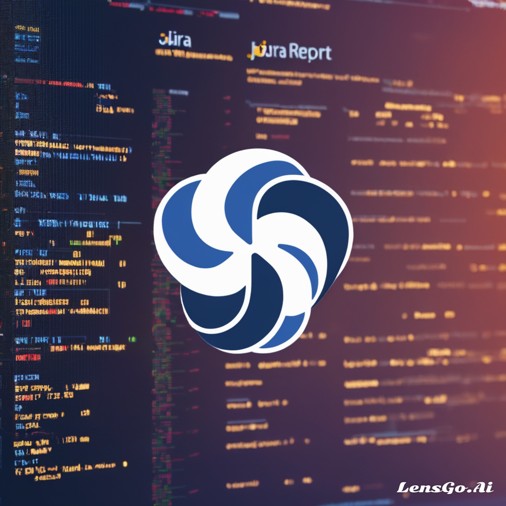

Welcome to my Projects section , here I have showcased all the projects I have worked on.
You will find multiple project based on various languages & tec
Unlocking the power of Jira with a cutting-edge data extraction tool! 🚀 Leveraging the JIRA API and Python, I've crafted a seamless solution to effortlessly extract and organize vital project insights.
